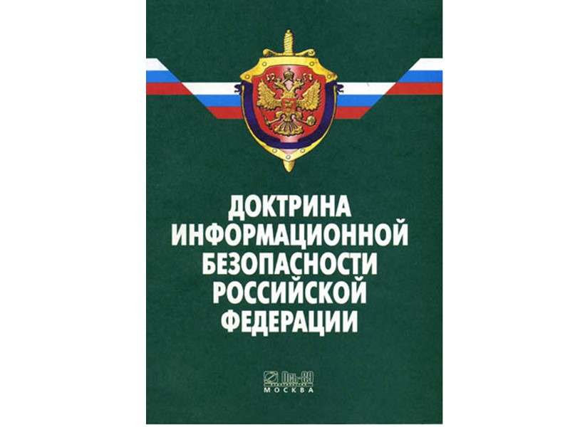

Государственная тайна. Законы и нормативные документы
Доктрина ИБ

Доктрина информационной безопасности Российской Федерации (утв. Указом Президента РФ от 5 декабря 2016 г. № 646).
Данный документ выглядит так, как представлено на рисунке ниже.
Важное замечание: этот документ является обновлённой версией документа, с тем же названием, утвержденного президентом РФ 9 сентября 2000 года.
Документ представляет собой систему официальных (с точки зрения государства) взглядов на обеспечение информационной безопасности.
Доктрина ИБ создана для следующих целей:
- Обеспечение и защита прав и свобод людей в сфере использования информации.
- Развитие в РФ отрасли информационных технологий и электронной промышленности.
- Распространение достоверной информации о гос. Политике РФ как внутри страны, так и за рубежом.
- Содействие международной ИБ.
Области обеспечения ИБ:
- Экономика: развитие конкурентоспособных информационных технологий, так как РФ очень зависима от зарубежных информационных технологий.
- Оборона страны: требуется сдерживание, предотвращение, прогнозирование военных конфликтов при помощи ИБ.
- Наука, технологии и образование: ее развитие, развитие кадрового потенциала, формирование навыков личной ИБ.
- Государственная и общественная безопасность: тесно связано с обороной страны, требуется, чтобы были предотвращены различные утечки гос. данных, нейтрализованы различные проявления пропаганды через ИТ и т.п.
Вывод:
Доктрина ИБ представляет собой комплекс взглядов на информацию с точки зрения государства, а также её защиты. Очевидно, что документ имеет прямое отношение к ИБ.
Указ об утверждении перечня сведений конфиденциального характера
Полное название
Указ Президента Российской Федерации «О внесении изменений в перечень сведений конфиденциального характера»(утвержден указом Президента Российской Федерации от 6 марта 1997 г. N 188)
Как это выглядит?

Что это?
Указ Президента Российской Федерации №188 - это документ, в котором утверждается перечень сведений конфиденциального характера.
А именно:
- Сведения о личной жизни гражданина, позволяющие идентифицировать его личность, за исключением сведений, подлежащих распространению в средствах массовой информации в установленных федеральными законами случаях.
- Сведения, составляющие тайну следствия и судопроизводства, равно как и лиц, участвующих в данных процессах: судей, должностных лиц правоохранительных и контролирующих органов, потерпевших и свидетелей.
- Служебные сведения, доступ к которым ограничен органами государственной власти в соответствии с Гражданским кодексом Российской Федерации и федеральными законами.
- Сведения, связанные с профессиональной деятельностью: врачебной, нотариальной, адвокатской.
- Сведения, связанные с коммерческой деятельностью.
- Сведения о сущности изобретения, полезной модели или промышленного образца до официальной публикации информации о них.
- Сведения, содержащиеся в личных делах осужденных, а также сведения о принудительном исполнении судебных актов или актов других органов, кроме сведений, являющихся общедоступными.
Как относится к безопасности?
Указ Президента Российской Федерации №188 необходим для:
Четкого регламентирования того, какие сведения являются конфиденциальными.
С чем связано?
Область действия:
Конфиденциальные сведения в информационном пространстве внутри Российской Федерации.
Указ "Об утверждении перечня сведений, отнесенных к государственной тайне"
Полное название
Указ Президента РФ от 30 ноября 1995 г. N 1203 "Об утверждении перечня сведений, отнесенных к государственной тайне" (с изменениями и дополнениями)
Как это выглядит?

Что это?
Указ "Об утверждении перечня сведений, отнесенных к государственной тайне" - это документ, в котором утверждается перечень сведений, отнесенных к государственной тайне.
А именно:
- Сведения в военной области:
- Планы применения вооруженных сил.
- Планы контртеррорестических операций.
- Технологии производств ядерных боеприпасов, ракетных топлив и тд.
- Сведения в области экономики, науки и техники:
- Объемы выпуска и поставок стратегических видов сельскохозяйственного сырья.
- Сведения о горных выработках, метрополитенах или других сооружениях, которые могут быть использованы в интересах обороны страны.
- Схемы водоснабжения городов с населением более 200 тыс. человек или железнодорожных узлов.
- Сведения в области внешней политики и экономики:
- Вопросы внешней политики, внешней торговли, раскрывающие стратегию, тактику внешней политики Российской Федерации, распространение которых может нанести ущерб безопасности государства.
- Сведения, раскрывающие объемы перевозок экспортно-импортных грузов между Российской Федерацией и государствами - участниками СНГ в военное время.
- Cведения в области разведывательной дейтельности и обеспечения безопасности лиц, в отношении которых принято решение о государственной защите.
- Сведения, раскрывающие силы, средства, результаты разведывательной деятельности.
- Сведения о сотрудниках, выполняющих или выполнявших специальные задания в преступных группах.
Как относится к безопасности?
Указ необходим для:
- Формирования государственной политики в области ИБ.
- Утверджения конкретных областей информации, отнесенных к государственной тайне, для их дальнейшей защиты.
С чем связано?
Документы:
Cт. 4 Закона Российской Федерации "О государственной тайне"
Об организации работы по отнесению сведений к государственной тайне см. распоряжение Правительства РФ от 28 февраля 1996 г. N 286-р
Область действия:
РФ
Постановление N870 "Об утверждении Правил отнесения сведений, составляющих
государственную тайну, к различным степеням секретности"
Полное название
Постановление №870 "Об утверждении Правил отнесения сведений, составляющих
государственную тайну, к различным степеням секретности"
Как это выглядит?

Что это?
Постановление N870 "Об утверждении Правил отнесения сведений, составляющих
государственную тайну, к различным степеням секретности" - это документ, в котором перечислены правила присуждения сепеней секретности различным государственным сведениям.
Сведения по степени секретности подразделяются на:
- Сведения особой важности
- Совершенно секретные сведения
- Секретные сведения
В документе утверждено следующее:
- Соответствие областей, к которым принадлежат сведения, и степеней секретности.
- Формальный процесс присуждения сведениям степени секретности.
Как относится к безопасности?
Постановление необходимо для:
- Формирования государственной практики определения секретности сведений
С чем связано?
Документы:
Постановление О внесении изменений в некоторые акты
Правительства Российской Федерации
по вопросам государственной тайны
Область действия:
Любые сведения, находящиеся в распоряжении государства или государственных корпораций, таких как "Росатом".